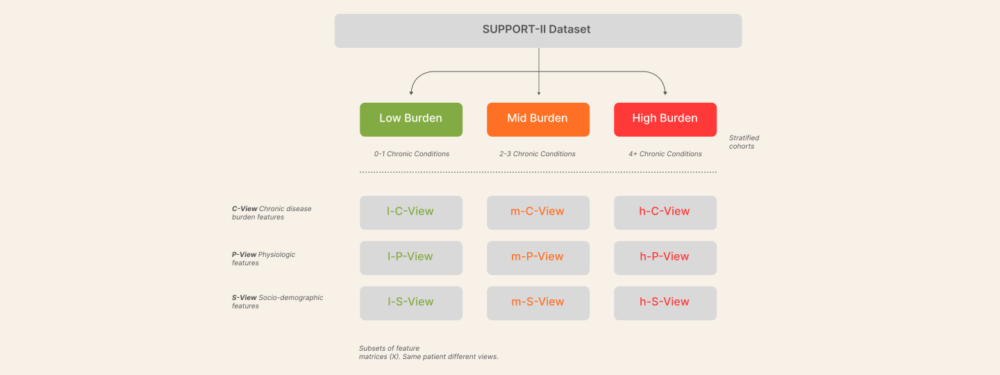
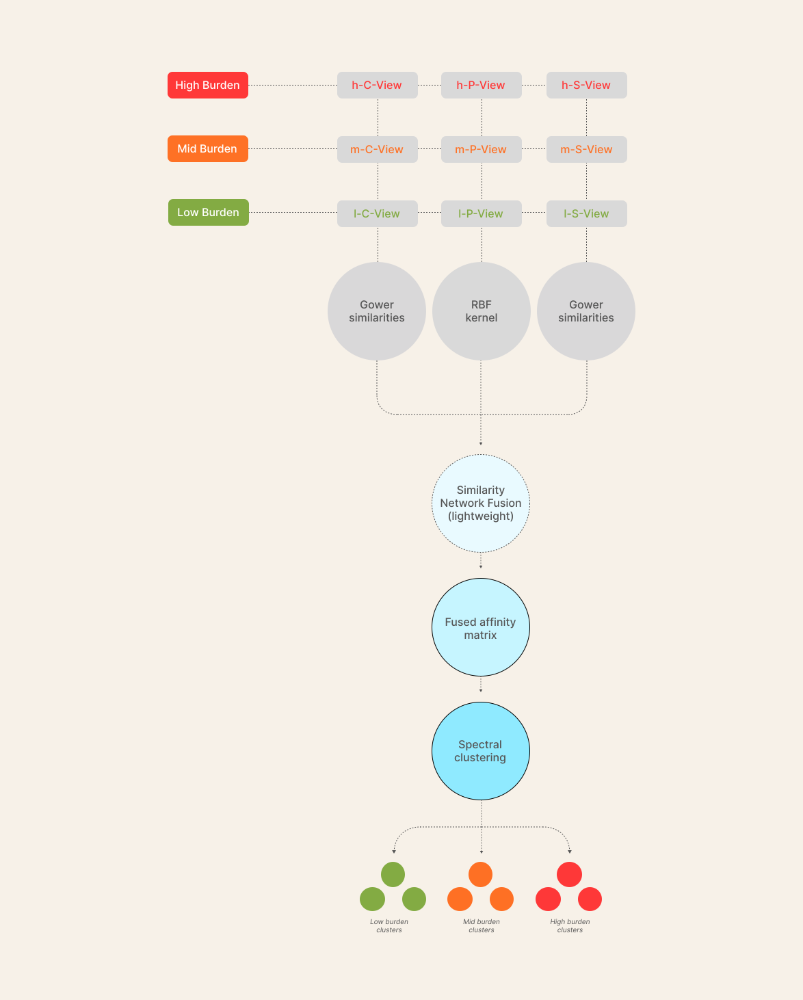

Hari S. Sreedeth
Critically ill patients arriving in intensive care rarely fit neat templates. Even within a single ICU, patients differ widely in age, comorbidity burden, physiology and social context. This heterogeneity makes it hard to reason about prognosis, compare like with like, or decide which treatment strategies are most appropriate.
Unsupervised machine learning is an obvious tool for this problem, and a large body of ICU phenotyping work already exists. However, in practice many clustering pipelines are dominated by the blunt signal of multimorbidity: patients with more chronic disease, and who are older, simply get grouped together. The resulting “phenotypes” often mirror gradients in age and comorbidity count rather than revealing distinct, acute physiological patterns that could plausibly change clinical decisions.
The Multimorbidity-Anchored ICU Phenotypes (MAIP) project1 is my attempt to tackle that limitation in a principled, end-to-end way using the SUPPORT-II cohort (over 9,000-patient sample from the Study to Understand Prognoses, Preferences, Outcomes and Risks of Treatment)2. designed MAIP as a full pipeline that (i) explicitly separates chronic disease burden from acute physiology and (ii) carries the resulting clusters all the way through to a human-readable bedside tool.
Methodologically, MAIP combines two complementary unsupervised pathways: a multimorbidity-stratified phenotyping route (MMSP) and a simplified multi-view Similarity Network Fusion implementation (SNF-lite). Once stable clusters are identified, I train a sparse decision-tree surrogate model to approximate the cluster assignments. The tree’s branch structure is exported as structured JSON rules, which are then translated into a clinician-facing rulecard and ASCII flowchart using a remote model accessed through the OpenAI API (GPT-4.1-mini). The RAG layer is grounded in a curated corpus of variable definitions, phenotype summaries and style guidance, and is coupled with programmatic checks to ensure that the textual rulecard remains logically faithful to the underlying JSON rules.
The project therefore has two concrete goals:
• Derive ICU phenotypes that are not just “more sick vs less sick” along a comorbidity axis
• Demonstrate a robust, versioned , maintainable & auditable pathway from unsupervised clustering to a deployable, human-readable decision tool.

Study design and data source
The study is styled as a retrospective cohort analysis using the SUPPORT-II dataset. Analyses were performed on a cleaned analytic cohort of 9,105 adult ICU admissions with baseline data sufficient to construct the chronic comorbidity and acute physiology feature views used for phenotyping. The cohort is characterised by an older case-mix (age median 64.9 years, IQR 52.8–74.0) and a modest male predominance (56%). Race was predominantly White (~79%) with a substantial Black minority (~15%). Chronic disease burden was moderate overall (comorbidity count median 2, IQR 1–3., range 0–9), and baseline functional status (ADL-based score) was low-to-moderate (median 1, IQR 0–2).
Physiological measurements near ICU admission span a wide acuity range (e.g., APS median 34, IQR 23–49., PaO₂/FiO₂ ratio median 276, IQR 180–333., creatinine median 1.2 mg/dL, IQR 0.9–1.9), supporting discovery of within-stratum acute presentations rather than a single severity gradient. Outcomes were available for validation only, including in-hospital mortality (25.9%), time to death/censoring (d.time median 233 days, IQR 26–761), ICU and hospital length of stay (median 5 and 11 days, respectively), and total medical costs (median ~$27.6k, IQR ~$13.9k–$64.3k). No outcome variables were used to construct phenotypes., outcome fields were held out and reserved for downstream validation analyses.
Variable Summary
Key characteristics of the SUPPORT-II cohort (N=9,105). Continuous variables are summarised as mean ± SD and median (IQR); binary variables as N (%).
| Characteristic | N / Mean ± SD | Median (IQR) | Dtype |
|---|---|---|---|
| Demographics | |||
| Age (years) | 62.65 ± 15.59 | 64.86 (52.80, 73.99) | Continuous |
| Male sex (sex=1) | 5,125 (56.27%) | — | Binary |
| Income category (1–4) | 1.94 ± 0.89 | 2.00 (1.00, 2.00) | Ordinal |
| Education (years) | 11.37 ± 3.22 | 12.00 (10.00, 14.00) | Integer |
| Multimorbidity & Chronic conditions | |||
| Comorbidity count (num.co) | 1.87 ± 1.34 | 2.00 (1.00, 3.00) | Count (skewed) |
| Diabetes | 1,789 (19.65%) | — | Binary |
| Dementia | 553 (6.07%) | — | Binary |
| Cancer status (ca, 0–2) | 0.55 ± 0.81 | 0.00 (0.00, 1.00) | Ordinal index |
| Chronic heart failure (dzgroup_chf) | 1,387 (15.23%) | — | Binary |
| COPD (dzgroup_copd) | 967 (10.62%) | — | Binary |
| Acute physiology & severity (Day-3 assessment) | |||
| Acute Physiology Score (aps) | 37.60 ± 19.90 | 34.00 (23.00, 49.00) | Continuous (skewed) |
| SUPPORT prognostic score (sps) | 25.74 ± 13.96 | 23.90 (15.00, 34.10) | Continuous |
| Mean arterial pressure (meanbp, mmHg) | 84.55 ± 27.69 | 77.00 (63.00, 107.00) | Continuous (skewed) |
| PaO2/FiO2 ratio (pafi, mmHg) | 263.39 ± 102.67 | 276.19 (180.00, 333.30) | Continuous |
| Creatinine (crea, mg/dL) | 1.77 ± 1.68 | 1.20 (0.90, 1.90) | Continuous (skewed) |
| Albumin (alb, g/dL) | 3.15 ± 0.68 | 3.50 (2.70, 3.50) | Continuous |
| Total bilirubin (bili, mg/dL) | 2.55 ± 4.42 | 1.00 (0.50, 2.50) | Continuous (skewed) |
| Blood urea nitrogen (bun, mg/dL) | 30.67 ± 22.29 | 25.00 (15.00, 40.00) | Continuous (skewed) |
| White blood cell count (wblc, ×103/µL) | 14.76 ± 9.46 | 13.00 (8.90, 18.50) | Continuous (skewed) |
| Urine output (urine, L/day) | 1.71 ± 1.40 | 1.47 (0.80, 2.27) | Continuous (skewed) |
| Outcomes & resource use (held out for validation) | |||
| In-hospital death (hospdead) | 2,360 (25.92%) | — | Binary |
| Follow-up time (d.time, days) | 478.45 ± 567.46 | 233.00 (26.00, 761.00) | Time-to-event (skewed) |
| Hospital length of stay (slos, days) | 17.86 ± 22.01 | 11.00 (6.00, 20.00) | Continuous (skewed) |
| Total medical cost (totmcst, $) | 28,839.15 ± 43,608.61 | 13,228.93 (5,179.89, 34,263.85) | Cost (38.2% missing) |
Feature engineering and view construction
To support multi-view phenotyping, X was organised into three views constructed deterministically from the cleaned SUPPORT-II table. The comorbidity view includes chronic burden variables (num.co, diabetes, dementia, ca) and diagnostic-group indicators derived from dzgroup (expanded to one-hot columns dzgroup_*). The physiology view includes Day-3 physiologic measurements and severity/coma variables (meanbp, hrt, resp, temp, wblc, sod, crea, alb, bili, bun, ph, pafi, urine, glucose, aps, sps, scoma, avtiss) and selected baseline indicators used in similarity modelling (including one-hot encodings derived from race and dnr). The socio-contextual view includes baseline demographic and socioeconomic proxies (age, sex, income, edu). Categorical fields were converted into explicit indicator columns (e.g., race_*, dnr_*, dzgroup_*), and ordinal fields were mapped into ordered integer scales (e.g., income recoded to 1–4). Diagnostic class (dzclass) was expanded during preprocessing but was not retained in the final feature set used for modelling.

Missingness in X was handled without reference to Y. Prior to imputation, records missing any “low-missingness” core variables (operationalised as variables with ≤82 missing values in the analytic extract) were removed. For a small set of physiologic fields, missing values were initialised to clinically typical defaults (alb=3.5, pafi=300, bili=0.8, crea=1.0, bun=20, wblc=10, urine=1.0) before multivariable imputation. Remaining missing values in X were imputed using an iterative multivariable procedure (IterativeImputer with BayesianRidge, max_iter=50, random_state=42) applied only to the feature set (excluding eid and all Y fields). After imputation, constrained variables were rounded and clipped to preserve valid support for downstream modelling (e.g., income limited to 1–4; edu limited to 0–31; binary indicators coerced to {0,1}).
Phenotyping strategy: multimorbidity-stratified baseline (MMSP) and multi-view fusion (SNF-lite)
Phenotyping was implemented as two within-stratum unsupervised pipelines, each applied separately to the same multimorbidity strata and using only the feature matrix X (no outcomes). Multimorbidity strata were defined from the comorbidity count (num.co) using fixed cut-points: Low_MM (0–1), Mid_MM (2–3), and High_MM (≥4), implemented as bins [0,2), [2,4), [4,∞). Within each stratum, the pipelines produced candidate cluster assignments and a shared set of internal selection metrics (bootstrap stability and separation indices) used for model comparison.
MMSP (baseline): physiology-only clustering within multimorbidity strata
The MMSP baseline clusters acute physiology features only within each multimorbidity stratum, using the pre-scaled physiology matrix (P_view_scaled.csv). For a given stratum, near-constant physiology columns (within-stratum standard deviation ≤1e-8) were dropped to avoid degenerate PCA components. Dimensionality reduction was then performed with PCA (not FAMD): the number of components was chosen to retain approximately 80% cumulative explained variance, with a minimum of 2 components where feasible and never exceeding the number of retained physiology features.

Clustering was performed on the PCA embedding using PAM k-medoids on Euclidean distances computed in the PCA space. Candidate numbers of clusters were evaluated over K = 2…8. For each K, clustering stability was estimated using bootstrap subsampling (fraction 0.80, B=100) and Adjusted Rand Index (ARI) computed across pairs of bootstrap runs on the overlap of sampled individuals. Internal separation metrics (silhouette, Calinski–Harabasz, Davies–Bouldin) were computed from a representative fit at each K. Final K selection used a stability-first rule: retain K values within 20% of the best stability, then select the best among those by highest silhouette, then highest Calinski–Harabasz, then lowest Davies–Bouldin. The final MMSP partition for the chosen K was obtained using best-of-20 restarts to reduce sensitivity to initialization.
Physiology Space
PCA of the acute physiology view (P-view) within each multimorbidity stratum. Points are coloured by MMSP cluster; arrows indicate the main contributing physiological variables.
MMSP cluster profiles
Heatmaps of MMSP clusters within each multimorbidity stratum. Colours show cluster-level z-scores for selected comorbidities and key physiology variables; warmer cells indicate relative enrichment within a cluster.
SNF-lite: multi-view similarity fusion within multimorbidity strata
SNF-lite integrates three feature views—comorbidity (C_view.csv), physiology (P_view.csv), and socio-contextual (S_view.csv)—within each multimorbidity stratum. Prior to similarity construction, low-signal variables in the comorbidity and socio-contextual views were removed: constants were dropped, and binary indicators with extreme prevalence (p<0.005 or p>0.995) were excluded. A safeguard check prevents a set of known outcome fields (e.g., death, hospdead, d.time, slos, totmcst) from being present in the C/S views used for fusion.
View-specific patient affinities were then constructed as follows. For comorbidity and socio-contextual views, a Gower-like similarity was computed using: (i) min–max scaling for numeric columns followed by average Manhattan distance, (ii) simple mismatch distance for multi-level categoricals, and (iii) an asymmetric binary treatment for {0,1} indicators using a Jaccard-style distance that ignores 0–0 matches, optionally weighted by prevalence (approximately p(1−p)) to down-weight extremely rare/common flags. For the physiology view, an RBF affinity was computed after standardization; the kernel used a local scaling parameter per individual based on the 7th nearest-neighbour distance (k_local=7) to reduce sensitivity to absolute scale differences across patients.
Fusion used a lightweight SNF routine. Each view affinity was KNN-masked to its top k=25 neighbours (include self), row-normalized to a row-stochastic matrix (diagonal set to 0), and iteratively updated for 10 iterations with mixing parameter α=0.5:
\[ P_v \leftarrow \alpha\,P^{\mathrm{KNN}}_v + (1-\alpha)\,\frac{1}{V-1}\sum_{u \ne v} P_u \]
followed by row-normalization. The final fused affinity was the mean across views and was symmetrized.
Clustering and K selection were performed on the fused affinity via spectral embedding followed by PAM k-medoids on Euclidean distances in the embedding space. Candidate K values were evaluated over K = 2…8, with the same bootstrap ARI stability procedure (B=100, subsample 0.80) and the same internal separation metrics. The same stability-first selection rule (20% tolerance from best stability; then silhouette/CH/DB tie-breaks) was applied. In addition, an eigengap diagnostic was computed from a KNN-sparsified normalized Laplacian (KNN=25) and recorded as a transparency aid. when the eigengap-suggested K achieved a silhouette within 95% of the selected K’s silhouette, the pipeline permitted preferring the eigengap K and refitting labels at that K (as implemented).
SNF-lite patient similarity networks
k-nearest-neighbour graphs derived from the fused multi-view similarity matrix within each multimorbidity stratum. Each node is a patient, edges connect highly similar patients, and colours indicate SNF-lite cluster membership.
SNF cluster profiles
Heatmaps of SNF clusters within each multimorbidity stratum. Colours show cluster-level z-scores for selected comorbidities and key physiology variables; warmer cells indicate relative enrichment within a cluster.
Internal Validation of MMSP and
SNF-lite Clusters
Internal clustering performance of the multimorbidity-stratified phenotyping (MMSP) solution and the Similarity Network Fusion (SNF-lite) solution across high, mid and low multimorbidity strata. For each stratum, MMSP metrics are reported at the rule-selected K from phase 1, and SNF-lite metrics are reported at the K chosen by the same stability-first selection rule (search range K = 3–8). Higher stability (ARI), silhouette and Calinski–Harabasz indices, and lower Davies–Bouldin indices, indicate better cluster separation. Across all strata, the SNF-lite solution with K = 3 shows consistently superior internal validity compared with MMSP; combined with prognostic and parsimony analyses, this motivated choosing SNF-lite as the primary phenotyping system.
| Stratum | Method | Clusters (K) | Stability (ARI) | Silhouette | Calinski–Harabasz | Davies–Bouldin |
|---|---|---|---|---|---|---|
| High multimorbidity (4+ chronic conditions) | ||||||
| High MM | MMSP | 5 | 0.221 | 0.115 | 91.16 | 2.48 |
| High MM | SNF-lite | 3 | 0.477 | 0.273 | 406.91 | 1.25 |
| Mid multimorbidity (2–3 chronic conditions) | ||||||
| Mid MM | MMSP | 3 | 0.321 | 0.110 | 367.23 | 2.80 |
| Mid MM | SNF-lite | 3 | 0.670 | 0.319 | 1566.30 | 1.13 |
| Low multimorbidity (0–1 chronic condition) | ||||||
| Low MM | MMSP | 4 | 0.267 | 0.114 | 370.92 | 2.61 |
| Low MM | SNF-lite | 3 | 0.607 | 0.388 | 1961.89 | 1.05 |
Cross-Validated Prognostic Value
of Phenotypes
Prognostic performance was evaluated using 5-fold cross-validated Harrell’s C-index for 6-month mortality within each multimorbidity stratum. The base model included age, sex, number of comorbidities (num.co) and APS, and was compared against versions augmented with MMSP or SNF-lite phenotypes. Across low (N = 4,183; 2,765 deaths), mid (N = 3,822; 2,648 deaths) and high multimorbidity (N = 1,100; 788 deaths), SNF-lite clusters consistently delivered larger gains in cross-validated C-index than MMSP clusters, with the strongest uplift in the low- and high-burden groups.

Figure 3: ΔC vs base (methods: MMSP, SNF-lite)
Five-fold cross-validated Harrell’s C-index for 6-month mortality by multimorbidity stratum.
The base model includes age, sex, number of comorbidities (num.co) and the Acute Physiology Score (APS).
MMSP and SNF-lite phenotypes are added as categorical predictors; we report mean C-index and mean
ΔC versus the base model across folds.
| Stratum | Model | Mean C-index | Mean ΔC vs base |
|---|---|---|---|
| High multimorbidity (4+ chronic conditions, N = 1,100; 788 deaths) | |||
| High MM | Base clinical model | 0.659 | — |
| High MM | Base + MMSP phenotypes | 0.662 | +0.003 |
| High MM | Base + SNF-lite phenotypes | 0.674 | +0.015 |
| Mid multimorbidity (2–3 chronic conditions, N = 3,822; 2,648 deaths) | |||
| Mid MM | Base clinical model | 0.642 | — |
| Mid MM | Base + MMSP phenotypes | 0.650 | +0.007 |
| Mid MM | Base + SNF-lite phenotypes | 0.655 | +0.012 |
| Low multimorbidity (0–1 chronic condition, N = 4,183; 2,765 deaths) | |||
| Low MM | Base clinical model | 0.640 | — |
| Low MM | Base + MMSP phenotypes | 0.646 | +0.006 |
| Low MM | Base + SNF-lite phenotypes | 0.682 | +0.042 |
Across all strata, SNF-lite phenotypes yielded larger cross-validated gains in discrimination than MMSP phenotypes, supporting SNF-lite as the primary multi-view phenotyping system in MAIP.
Parsimony & Interpretability of
Phenotyping Systems
MMSP and SNF-lite differ not only in how they discover structure, but also in how compact and interpretable the resulting phenotypes are. Below, I summarise the number and balance of clusters and the complexity of the surrogate decision trees in each multimorbidity stratum.
| Stratum | Method | Clusters (K) | Smallest cluster (% of stratum) | Largest cluster (% of stratum) | Number of rules | Median conditions per rule | Range of conditions (min–max) |
|---|---|---|---|---|---|---|---|
| High multimorbidity (4+ chronic conditions, N = 1,100) | |||||||
| High MM | MMSP | 5 | 1.6% | 46.6% | 14 | 4 | 3–4 |
| High MM | SNF-lite | 3 | 31.0% | 37.5% | 14 | 4 | 3–4 |
| Mid multimorbidity (2–3 chronic conditions, N = 3,822) | |||||||
| Mid MM | MMSP | 3 | 21.7% | 49.8% | 16 | 4 | 4–4 |
| Mid MM | SNF-lite | 3 | 26.2% | 44.2% | 13 | 4 | 2–4 |
| Low multimorbidity (0–1 chronic condition, N = 4,183) | |||||||
| Low MM | MMSP | 4 | 8.0% | 43.8% | 15 | 4 | 3–4 |
| Low MM | SNF-lite | 3 | 11.4% | 58.6% | 11 | 4 | 2–4 |
Both systems admit shallow surrogate trees with a median of four conditions per rule, but SNF-lite achieves this with fewer, generally better-balanced clusters, which simplifies explanation and naming of phenotypes for clinicians.

Cluster balance in SNF-lite versus MMSP phenotypes. Each bubble represents the smallest and largest clusters in the most imbalanced stratum for each method. SNF-lite’s biggest imbalance occurs in the low multimorbidity stratum (11.4% vs 58.6%), whereas MMSP shows a much more extreme tail in the high multimorbidity stratum, with a tiny 1.6% cluster alongside a dominant 46.6% cluster.
Concordance & Complementarity
We next compared MMSP and SNF-lite labelings within each multimorbidity stratum. Cross-tabulations and pairwise Venn diagrams showed that no SNF-lite cluster mapped cleanly onto a single MMSP cluster or vice versa; most clusters shared only partial overlap.
Concordance between MMSP and SNF-lite phenotypes
Agreement between MMSP and SNF-lite labels was quantified within each multimorbidity stratum using Adjusted Rand Index (ARI) and Normalised Mutual Information (NMI). Values near 0 indicate little more than random overlap; values near 1 indicate near-identical partitions.
| Stratum | Sample size (N) | MMSP clusters (KMMSP) |
SNF-lite clusters (KSNF) |
Adjusted Rand Index (ARI) |
Normalised Mutual Information (NMI) |
Concordance summary |
|---|---|---|---|---|---|---|
| Low multimorbidity (0–1 chronic condition) | 4,183 | 4 | 3 | 0.078 | 0.119 | Low concordance; large SNF clusters mix several MMSP phenotypes. |
| Mid multimorbidity (2–3 chronic conditions) | 3,822 | 3 | 3 | 0.141 | 0.152 | Highest overlap, but still partial nesting and many-to-many mapping. |
| High multimorbidity (4+ chronic conditions) | 1,100 | 5 | 3 | 0.098 | 0.129 | Low concordance; each SNF cluster draws from multiple MMSP clusters. |
Concordance metrics were modest (ARI 0.08–0.14; NMI 0.12–0.15), indicating that the two methods capture related but distinct structure in the patient space. Together with the cross-validated prognostic analysis—where both labelings improved discrimination over a clinical base model but SNF-lite yielded the largest ΔC—this suggests that MMSP and SNF-lite provide complementary phenotypic views rather than redundant partitions.
We therefore treat SNF-lite phenotypes as the primary clustering solution, with MMSP phenotypes providing a physiology-focused sensitivity and interpretability check within comorbidity strata.
SNF-lite Phenotype Profiles Across Multimorbidity Strata
SNF-lite recovered three clinically coherent phenotypes within each multimorbidity stratum. In the high-burden cohort, clusters separate patients with diabetic multi-organ failure from chronic cardio–pulmonary and cardiometabolic cancer profiles. Mid-multimorbidity phenotypes span older COPD-dominant chronic respiratory disease, multi-organ failure with malignancy and cirrhosis, and compensated heart failure with solid tumours. Even among low-multimorbidity patients, SNF-lite distinguishes low-acuity solid tumour cases, neurologic catastrophe/coma, and acute multi-organ failure in otherwise low-comorbidity patients. Together, these nine phenotypes map onto familiar ICU patterns while making the spectrum of chronic burden and acute severity explicit.
| Stratum | Cluster | Phenotype label | Dominant comorbidities / features | Acute physiology profile (relative within stratum) |
|---|---|---|---|---|
| High multimorbidity (4+ chronic conditions) | ||||
| High MM | H1 | Diabetic multi-organ failure | High burden of acute renal failure / multi-organ system failure, frequent diabetes and cancer, substantial multimorbidity. | Most acutely unwell; highest acute physiology scores, impaired oxygenation, pronounced biochemical derangement. |
| High MM | H2 | Cardio–pulmonary plus liver disease | Enriched for heart failure, COPD and cirrhosis; moderate diabetes and cancer; fewer explicit multi-organ failure codes. | Intermediate severity; acute physiology close to stratum average, oxygenation and albumin relatively preserved. |
| High MM | H3 | Cardiometabolic plus solid tumours | Very high prevalence of heart failure and diabetes with substantial solid tumour burden (e.g. lung and other cancers). | Least acutely deranged in this stratum; relatively preserved oxygenation and renal function despite heavy chronic disease. |
| Mid multimorbidity (2–3 chronic conditions) | ||||
| Mid MM | M1 | Older COPD-dominant chronic respiratory | Marked excess of COPD with coexisting but moderate heart failure, diabetes and cancer; older age profile. | Mild-to-moderate acute derangement; modest impairment of oxygenation. |
| Mid MM | M2 | Multi-organ failure with malignancy and cirrhosis | High rates of acute renal failure / multi-organ failure, malignancy (including metastatic), cirrhosis and more frequent coma. | Most abnormal acute physiology in this stratum; low albumin and more deranged biochemical markers. |
| Mid MM | M3 | Compensated heart failure plus solid tumours | High prevalence of heart failure and solid tumours (lung, colorectal), relatively few explicit organ-failure codes. | Best-preserved acute physiology; near-normal oxygenation, renal indices and vital signs. |
| Low multimorbidity (0–1 chronic condition) | ||||
| Low MM | L1 | Low-acuity solid tumour | Dominated by solid tumours, especially lung and colon cancer, with few additional chronic conditions. | Lowest acute severity; good oxygenation and renal function, limited physiological derangement. |
| Low MM | L2 | Neurologic catastrophe / coma | Very high frequency of coma diagnoses; relatively low chronic multimorbidity and modest organ-failure burden. | Marked neurological compromise with only moderate systemic physiological derangement. |
| Low MM | L3 | Acute multi-organ failure with low baseline multimorbidity | Very high prevalence of acute renal failure / multi-organ failure in patients with few recorded chronic diseases. | Most acutely unwell in this stratum; impaired oxygenation and worse biochemical profiles despite low multimorbidity. |
 clusters.svg)
Primary outcome associations (365-day mortality)
Within each multimorbidity stratum, I estimated adjusted associations between SNF-lite phenotype membership and 365-day all-cause mortality using Cox proportional hazards models, with cluster as the exposure and adjustment for age (standardised), sex, multimorbidity count (standardised), and acute physiology severity (APS, standardised). Cluster membership remained independently prognostic after adjustment. In the high multimorbidity cohort (N=1100), both High_MM_1 and High_MM_2 had lower mortality hazards than the reference High_MM_0 (High_MM_1 vs High_MM_0: HR 0.57 [0.39–0.82]; High_MM_2 vs High_MM_0: HR 0.51 [0.37–0.70]). In the mid stratum (N=3822), Mid_MM_1 showed the highest adjusted risk relative to Mid_MM_0 (HR 1.87 [1.56–2.23]), with a smaller but still significant elevation for Mid_MM_2 (HR 1.30 [1.11–1.53]). In the low stratum (N=4183), the coma-dominant phenotype Low_MM_1 had markedly higher adjusted risk than Low_MM_0 (HR 2.36 [1.93–2.89]), while Low_MM_2 had lower adjusted hazard than Low_MM_0 (HR 0.59 [0.49–0.73]), consistent with long-term risk being driven by underlying disease composition in addition to acute severity. APS was the strongest and most consistent covariate across strata (HR ~1.4–1.6 per 1 SD increase).
Proportional hazards diagnostics based on Schoenfeld residuals indicated departures from strict PH assumptions even after truncation to 365 days; hazard ratios are therefore interpreted as average effects over the 1-year horizon and are presented alongside unadjusted KM curves as supporting evidence.
In addition to the adjusted Cox models reported above, I ran supporting outcome analyses to contextualise these findings, including unadjusted Kaplan–Meier curves with logrank tests, and non-parametric comparisons of ICU length of stay and total medical costs across phenotypes. These supplementary outputs are provided in the Supplementary section (figures and tables), alongside cluster profile summaries used for phenotype interpretation.
High Multimorbidity Stratum
| Term | Adjusted HR (95% CI) | p-value |
|---|---|---|
| Reference phenotype = High_MM_0 | ||
| High_MM_1 vs High_MM_0 | 0.57 (0.39–0.82) | 0.003 |
| High_MM_2 vs High_MM_0 | 0.51 (0.37–0.70) | 2.0e-05 |
| Age (per 1 SD) | 0.96 (0.82–1.11) | 0.576 |
| Male (vs female) | 1.24 (1.03–1.50) | 0.025 |
| Multimorbidity count (per 1 SD) | 1.02 (0.88–1.18) | 0.798 |
| Acute physiology (APS, per 1 SD) | 1.43 (1.20–1.70) | 4.0e-05 |
Mid Multimorbidity Stratum
| Term | Adjusted HR (95% CI) | p-value |
|---|---|---|
| Reference phenotype = Mid_MM_0 | ||
| Mid_MM_1 vs Mid_MM_0 | 1.87 (1.56–2.23) | 2.1e-11 |
| Mid_MM_2 vs Mid_MM_0 | 1.30 (1.11–1.53) | 0.002 |
| Age (per 1 SD) | 1.28 (1.17–1.40) | 1.1e-07 |
| Male (vs female) | 1.06 (0.96–1.17) | 0.239 |
| Multimorbidity count (per 1 SD) | 0.92 (0.83–1.01) | 0.101 |
| Acute physiology (APS, per 1 SD) | 1.63 (1.49–1.78) | 2.6e-26 |
Low Multimorbidity Stratum
| Term | Adjusted HR (95% CI) | p-value |
|---|---|---|
| Reference phenotype = Low_MM_0 | ||
| Low_MM_1 vs Low_MM_0 | 2.36 (1.93–2.89) | 1.2e-15 |
| Low_MM_2 vs Low_MM_0 | 0.59 (0.49–0.73) | 1.5e-04 |
| Age (per 1 SD) | 1.22 (1.11–1.34) | 5.3e-05 |
| Male (vs female) | 1.06 (0.93–1.21) | 0.427 |
| Multimorbidity count (per 1 SD) | 1.66 (1.47–1.87) | 9.9e-17 |
| Acute physiology (APS, per 1 SD) | 1.48 (1.33–1.65) | 2.2e-11 |
Secondary Outcomes - Resource Utilization
Beyond mortality, I assessed whether the identified phenotypes corresponded to distinct patterns of healthcare resource consumption. Using Kruskal-Wallis tests, I compared distributions of hospital length of stay (LOS) and total medical costs across phenotypes within each stratum to quantify the operational impact of these clinical subtypes.
High Stratum: Significant heterogeneity was observed in both LOS ($P=0.015$) and costs ($P=0.006$). The high-risk reference phenotype High_MM_0 was associated with the highest resource burden (Median LOS: 9.0 days; Median Cost: $23,412), while the lower-risk phenotypes High_MM_1 and High_MM_2 showed reduced utilization (Median LOS: 7.0 days for both).
Mid Stratum: Resource utilization varied markedly ($P < 0.001$). Consistent with its high mortality risk, Mid_MM_1 accrued the highest median costs ($22,042) and longest stay (9.0 days), nearly double the costs of the lower-risk reference Mid_MM_0 ($12,189).
Low Stratum: The starkest contrast mirrored the survival findings ($P < 0.001$). The high-risk Low_MM_1 phenotype had a median LOS of 8.0 days and costs of $21,114, whereas the protective Low_MM_2 phenotype demonstrated the lowest resource utilization in the entire cohort (Median LOS: 4.0 days; Median Cost: $9,207).

| Stratum | Phenotype | Median LOS (days) | Median Cost ($) |
|---|---|---|---|
| High Multimorbidity | |||
| High | High_MM_0 (ref) | 9.0 | 23,412 |
| High | High_MM_1 | 7.0 | 17,358 |
| High | High_MM_2 | 7.0 | 18,362 |
| Mid Multimorbidity | |||
| Mid | Mid_MM_0 (ref) | 6.0 | 12,189 |
| Mid | Mid_MM_1 | 9.0 | 22,042 |
| Mid | Mid_MM_2 | 7.0 | 14,842 |
| Low Multimorbidity | |||
| Low | Low_MM_0 (ref) | 5.0 | 11,353 |
| Low | Low_MM_1 | 8.0 | 21,114 |
| Low | Low_MM_2 | 4.0 | 9,207 |
Surrogate trees and LLM-derived rulecards
To translate SNF-lite phenotypes into compact, auditable decision logic, we fit constrained decision-tree surrogates to approximate phenotype assignments and then convert the extracted rule paths into clinician-facing rulecards using a controlled remote LLM pipeline with programmatic validation.
Surrogate decision trees (per stratum)
Within each multimorbidity stratum (High_MM, Mid_MM, Low_MM), a separate decision tree classifier was trained to approximate the SNF-lite phenotype label for that stratum. The feature set matched the harmonised baseline variables used in phenotyping. Tree complexity was constrained (depth and leaf-size limits) and selected by cross-validation to balance fidelity and interpretability. Surrogate fidelity was summarised using accuracy and macro-averaged F1.
Rule extraction and canonical JSON rulesets
The fitted tree structure was exported into a structured JSON ruleset. Each leaf path corresponds to one rule defined by an ordered conjunction of feature–operator–threshold conditions and an associated phenotype label. The JSON ruleset is treated as the canonical source of truth for downstream translation and QC.
Canonical rulecard output format (fixed headings)
Phenotype <label> – <short title>Key idea:– one or two sentences summarising the typical patientRulecard:– a bullet list of explicit IF/THEN rulesASCII flowchart:– a simple text flowchart mirroring the same branch
The JSON representation records, for each rule, the feature names, comparison operators, threshold values, and the resulting phenotype label. A schematic example is:
{
"ruleset_id": "maip_v1",
"phenotypes": ["P1", "P2", "P3", "P4"],
"rules": [
{
"id": "R1",
"if": [
{"feature": "num_co", "op": "<", "value": 2},
{"feature": "aps", "op": ">", "value": 18}
],
"then": {"phenotype": "P2"}
}
]
}This structured representation becomes the canonical source of truth for the rule logic used in the subsequent LLM translation phase.
LLM translation into rulecards (remote API)
For each phenotype label, a prompt was assembled by concatenating: (i) the phenotype’s JSON rule paths, (ii) a phenotype summary (curated from analytic outputs), (iii) a phenotype-specific subset of the variable dictionary for features appearing in those rules, and (iv) a style guide that fixes phrasing and output structure. A remote chat model (GPT-4.1-mini via API) was then used as a controlled re-writer to produce a canonical markdown rulecard with three fixed sections: Key idea, Rulecard, and ASCII flowchart. Generation was run at low temperature to reduce variability.
Programmatic quality control
Generated rulecards were validated against the JSON rulesets and variable dictionary. QC checks included: (i) rule coverage (each JSON condition must appear in at least one textual “IF …” line, including threshold values), (ii) feature-name alignment against canonical dictionary keys, and (iii) an optional synthetic-profile sanity check that confirms exported rule paths behave consistently with the fitted surrogate tree.
Example of the QC pass that validates coverage of JSON conditions in the generated markdown rulecard.
def validate_rule_coverage(json_rules, rulecard_text):
# Extract “- IF …” lines and verify each JSON condition is represented.
if_lines = [ln for ln in rulecard_text.splitlines() if ln.lstrip().startswith("- IF")]
for rule in json_rules:
for cond in rule["if"]:
feat = cond["feature"]
val = str(cond["value"])
ok = any((feat in ln) and (val in ln) for ln in if_lines)
if not ok:
return False, (feat, val)
return True, NoneSurrogate fidelity (cross-validated)
Cross-validated fidelity of decision-tree surrogates to SNF-lite phenotypes, by multimorbidity stratum. Values are mean ± SD.
| Stratum | CV accuracy | Macro–F1 |
|---|---|---|
| High MM | 0.741 ± 0.027 | 0.744 ± 0.026 |
| Mid MM | 0.821 ± 0.004 | 0.797 ± 0.007 |
| Low MM | 0.900 ± 0.007 | 0.877 ± 0.013 |
Surrogate fidelity was highest in the low-multimorbidity stratum and lowest in the high-multimorbidity stratum, consistent with greater heterogeneity in high multimorbidity. Across strata, extracted rule sets typically required multiple leaf paths to cover physiologically diverse phenotypes, while more specific phenotypes could be represented by fewer rules.
Rulecard outputs and QC status
The pipeline produced one canonical markdown rulecard per phenotype (three phenotypes per stratum), each containing a short “Key idea” summary, explicit IF/THEN rules that mirror the JSON conditions, and an ASCII flowchart representing the same decision structure. Programmatic validation reports summarised rule coverage and dictionary alignment for each phenotype and flagged any missing feature–threshold mappings for manual correction.
Conclusion
MAIP is an end-to-end, multimorbidity-anchored phenotyping and translation pipeline: from multi-view unsupervised learning to auditable, clinician-readable decision logic.
In the SUPPORT-II cohort, stratifying by baseline multimorbidity before clustering made the target problem explicit: within comparable chronic disease burden, identify distinct acute physiologic presentations and care-context patterns. Across low, mid and high multimorbidity strata, the SNF-lite multi-view fusion approach produced stable, clinically coherent phenotypes with stronger internal validity and larger cross-validated discrimination gains than the physiology-only MMSP baseline.
These phenotypes were not treated as opaque labels. I distilled each stratum’s SNF-lite assignments into shallow decision-tree surrogates, exported the leaf paths as canonical JSON rules, and produced clinician-facing rulecards and ASCII flowcharts via a controlled remote LLM translation step. A programmatic QC layer checks rule coverage and dictionary alignment, preserving traceability from cluster definition to bedside-readable logic.
Together, this work demonstrates a maintainable pattern for clinically grounded unsupervised phenotyping: separate chronic burden from acute state, fuse complementary data views, validate on held-out outcomes, and operationalise phenotypes through versioned, auditable rules. Supporting Kaplan–Meier, LOS and cost analyses are provided in the Supplementary section to contextualise the primary mortality findings.